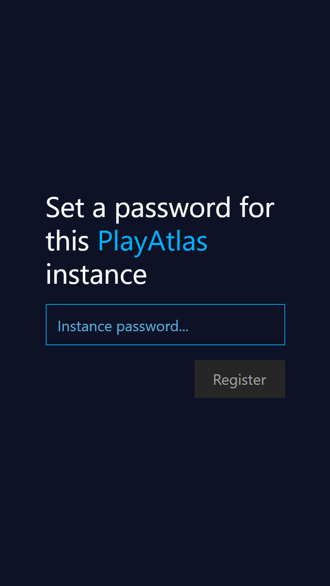
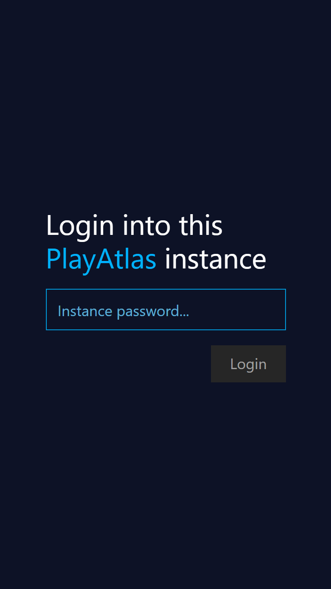
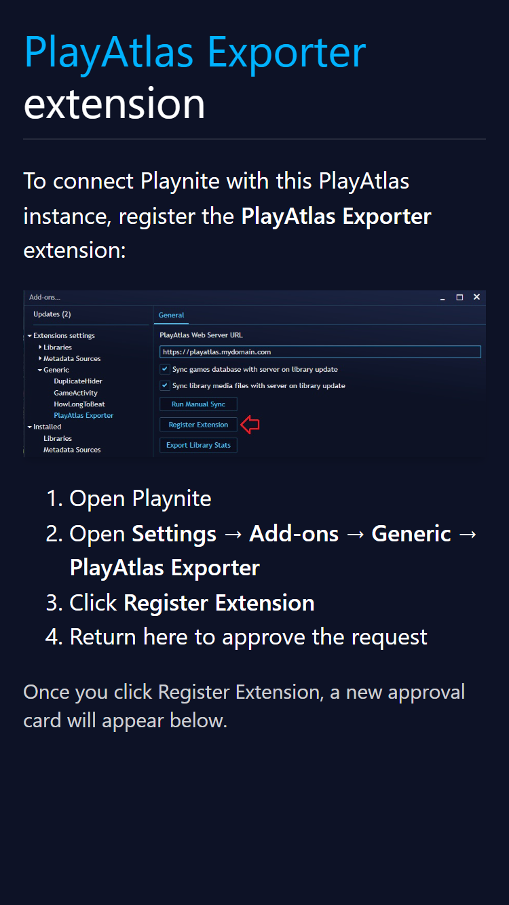
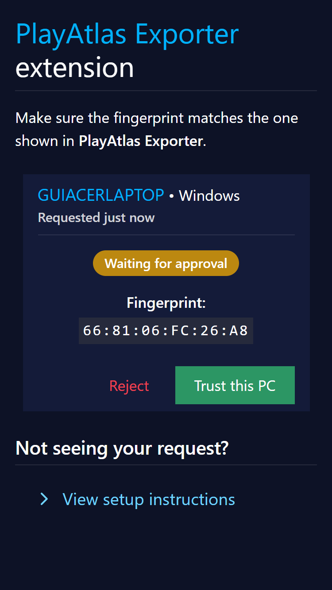
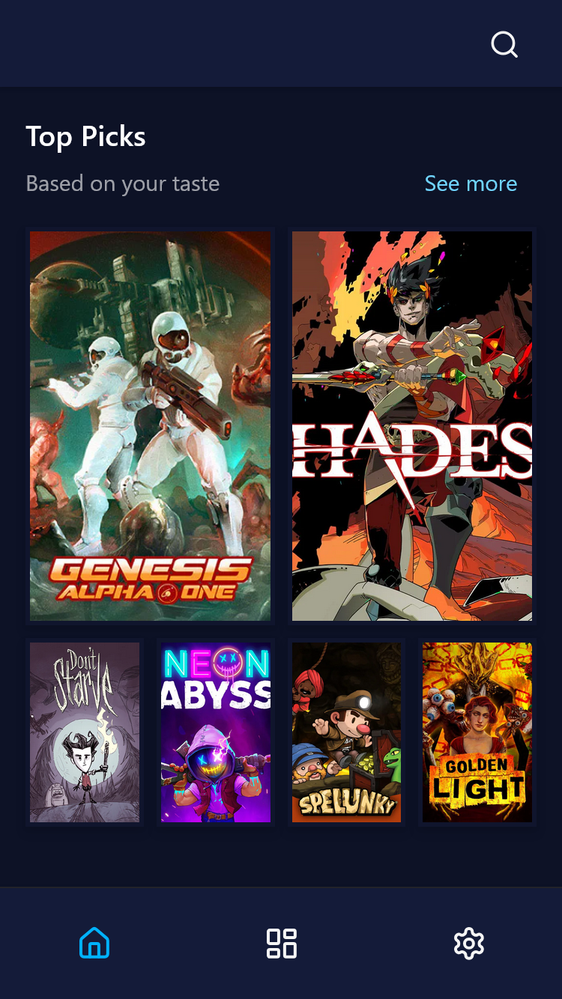

Quick Start
Here's a quick way to install PlayAtlas so you can try it out as soon as possible.
Requirements
-
A dedicated Linux host that:
- Can run Podman containers
- Has a reverse-proxy to terminate TLS
- Allows TCP connections on port 443 over LAN
-
A personal Windows host with Playnite installed.
- A client device (mobile or desktop) with a modern browser (Firefox or Chromium-based).
Warning
PlayAtlas is a distributed solution requiring a dedicated Linux host that can run containerized self-hosted services. Installing PlayAtlas directly on your Windows Playnite host is not supported nor recommended. Other ways of installing PlayAtlas not mentioned in this documentation are not supported.
Step 1: Setup HTTPS
When PlayAtlas is accessed from another device on your LAN, HTTPS is required.
Modern browsers restrict certain APIs (including Web Crypto APIs used by PlayAtlas) to secure contexts. Accessing the application via plain HTTP on a LAN IP (e.g., http://192.168.x.x) will cause runtime errors.
The recommended approach is to use a reverse-proxy.
Any reverse-proxy may be used, as long as it can reach the PlayAtlas server Podman container.
If deploying a reverse-proxy for the first time, a common container network may be required. One can be crated by running:
podman network create services
servicesis the network name and can be any name.
Info
The rest of this guide shows instruction on how to setup Caddy, assumes a common Podman network named services and the PlayAtlas reachable address to be playatlas.local. If using a different reverse-proxy, the steps will be similar, but for specific details not covered here, please visit its official documentation. Common reverse-proxies and links to their respective official docs: Nginx • Traefik • Pangolin
Caddy
To deploy Caddy, run:
podman run -d \
--name caddy-server \
--network=services \
-v $(pwd)/caddy-config/Caddyfile:/etc/caddy/Caddyfile \
-p 80:80 \
-p 443:443 \
docker.io/caddy
Below is a minimal Caddyfile example you can use, adapt as needed:
playatlas.local {
reverse_proxy playatlas:3000
}
Step 2: Start the PlayAtlas Server Container
To deploy PlayAtlas, run:
podman run -d \
--name playatlas \
--network=services \
-v playatlas-data:/app/data \
-e TZ=America/Sao_Paulo \
-e PLAYATLAS_LOG_LEVEL=0 \
docker.io/library/playatlas
Important: Explicit Interface Binding-
Do not expose PlayAtlas using
-p 3000:3000without specifying an address. Doing so will bind the service to all network interfaces (0.0.0.0on IPv4 and::on IPv6), potentially exposing it beyond your intended trust boundary.PlayAtlas is designed to operate within a controlled LAN environment and may allow remote extension-triggered operations on your Playnite host. Binding explicitly ensures you maintain that boundary.
Step 3: Setup an Instance Password
Navigate to https://playatlas.local on any modern browser. The following page should be shown:

After setting up your instance password, you'll be redirected to the login page, simply enter the instance password set in the previous step:

Step 4: Setup PlayAtlas Exporter
Step 4.1: Install PlayAtlas Exporter
Install the latest PlayAtlas Exporter extension version on Github.
Step 4.2: Pair the Exporter with the Server
Go back to PlayAtlas, it should automatically send you to the following page:

After requesting a registration from the Exporter, the UI should automatically update, displaying the created registration:

If the fingerprint matches, trust the Exporter by clicking on "Trust this PC".
Try the Web App
After following the setup, you already landed on the home page:

No extra setup is required, PlayAtlas will stay fully synchronized with your Playnite library, enjoy.